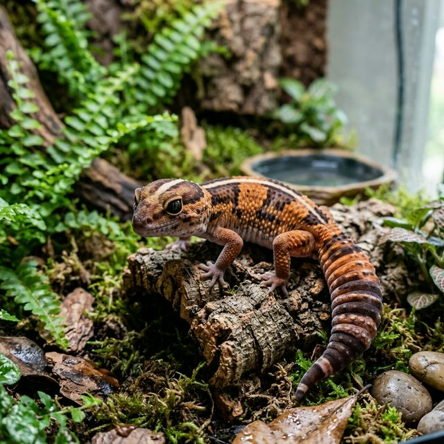
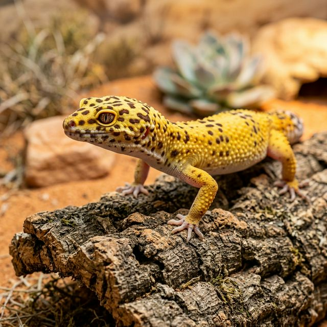
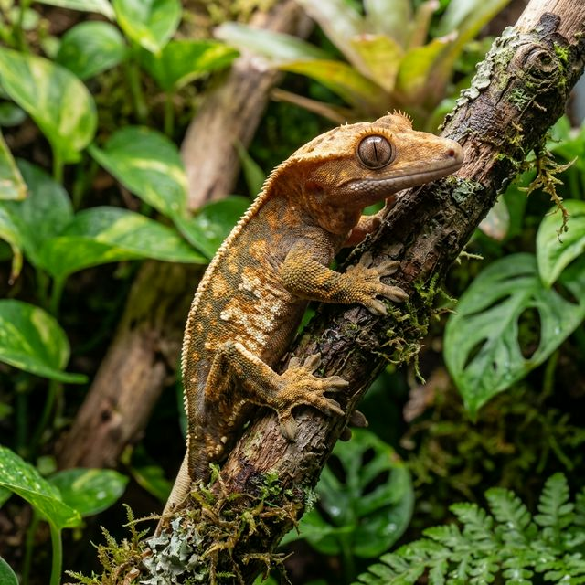
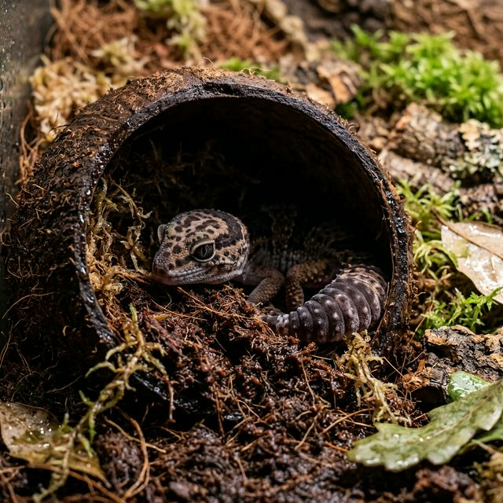
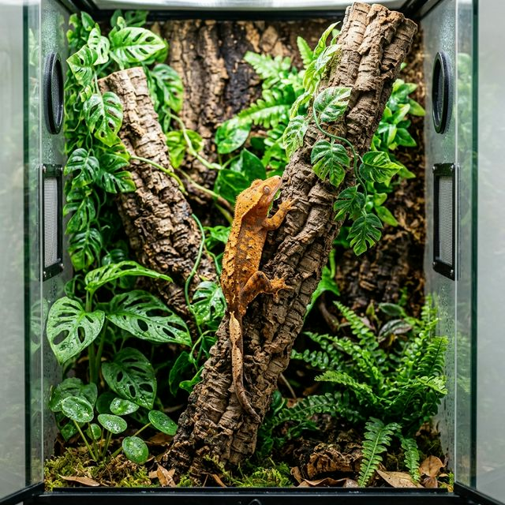
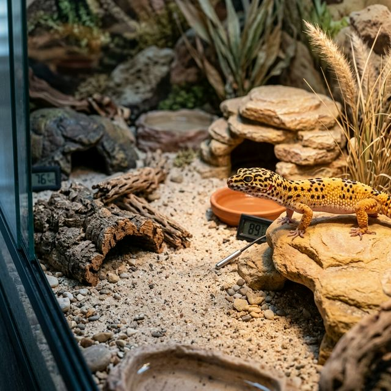
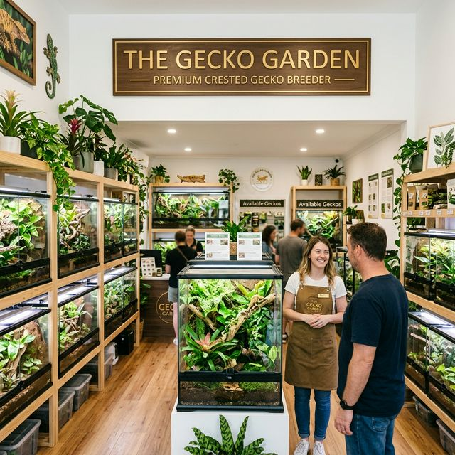
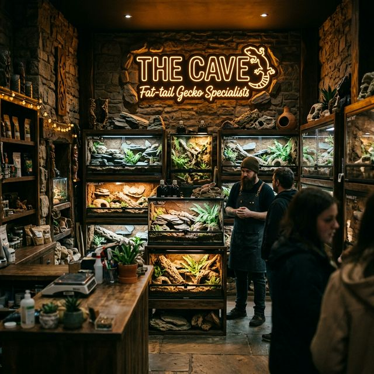
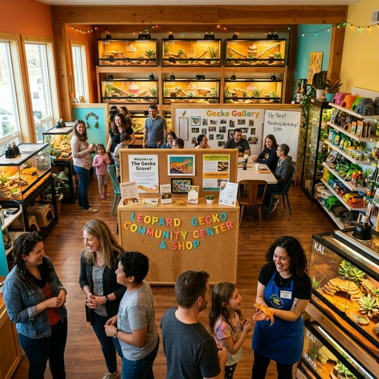

다양한 파충류와 함께하는 프리미엄 라이프스타일을 제안합니다. 안전하고 올바른 사육 정보와 함께 특별한 동반자를 찾아보세요.
파충류는 단순한 반려동물을 넘어, 데스크톱의 작은 정원 속 자연의 경이로움을 선사합니다. 우리는 생명 존중을 최우선으로, 모든 파충류가 건강하게 자랄 수 있는 환경과 지식을 공유합니다.
파충류 입문을 위한 A to Z (클릭)
인기 있는 파충류 친구들을 만나보세요.

펫테일게코펫테일게코는 서아프리카 건조 지대에 서식하지만, 바위 틈이나 땅속에 숨어 지내며 습기를 보충하는 습성이 있습니다. 코코피트, 스파그넘 이끼 등을 활용해 '촉촉한' 상태의 습식 은신처를 제공하는 것이 건강 관리의 핵심입니다.

레오파드게코레오파드 게코는 야행성이며, 곤충을 급여하는 식단 관리가 필수입니다. 사막 테라리움 환경을 구성하여 핫존과 쿨존을 명확하게 분리해 주는 것이 건강의 비결입니다.

크레스티드게코숲속 나무를 타는 습성을 가진 크레스티드 게코는 물에 섞어주는 슈퍼푸드를 주식으로 하며 관리 난이도가 낮고 속눈썹 모양의 볏이 큰 특징입니다.
초보자를 위한 완벽한 종별 사육 환경 조성 팁

펫테일게코 세팅건조한 아프리카에 살지만 땅속에 숨는 습성이 있습니다. 코코피트를 촉촉하게 적신 '습식 은신처'를 반드시 마련해주고 하부 열원으로 매트를 30도 정도로 유지해 주세요.

크레스티드게코 세팅벽에 붙어 이동할 수 있게 세로로 긴 유리 사육장이 적합합니다. 굵은 코르크보드와 인조 덩굴을 입체적으로 엮어 열대우림처럼 꾸미고 하루 1~2회 벽면에 분무해 주세요.

레오파드게코 세팅따뜻한 구역(핫존 30도)과 시원한 구역(쿨존 24도)이 나뉘어야 합니다. 핫존에 건식 은신처를 두고, 모래 베이스 장판으로 건조하게 관리하되 언제든 마실 수 있는 얕은 물그릇을 항상 놓아주세요.
건강한 사육을 위해 필요한 필수품 목록
정밀 전자저울은 단순히 체중을 재는 것을 넘어, 유체 게코의 성장 곡선을 확인하고 성체 암컷의 번식 적정 체중 도달 여부를 파악하는 데 필수적인 도구입니다. 0.01g 단위까지 측정 가능한 저울로 건강을 지켜주세요.
이 영억은 추후 노션에서 데이터가 갱신되면 표출됩니다. 노션에 더 많은 용품 가이드를 등록해 주세요.
전문 브리더들과 소통하고 양질의 환경을 제공해 보세요.

크레스티드게코 전문아름다운 볏과 눈망울을 가진 크레스티드 게코 전문샵입니다. 건강한 개체와 프리미엄 용품을 한곳에서 만나보세요.

펫테일게코 전문통통한 꼬리가 매력적인 펫테일 게코 전문 브랜드입니다. 감각적인 인스타그램에서 건강하게 축양된 개체들을 만나보세요.

레오파드게코 전문다양한 모프와 화려한 패턴의 레오파드 게코 정보가 가득한 커뮤니티 공간입니다. 집사들과 폭넓은 소통의 장을 열어보세요.